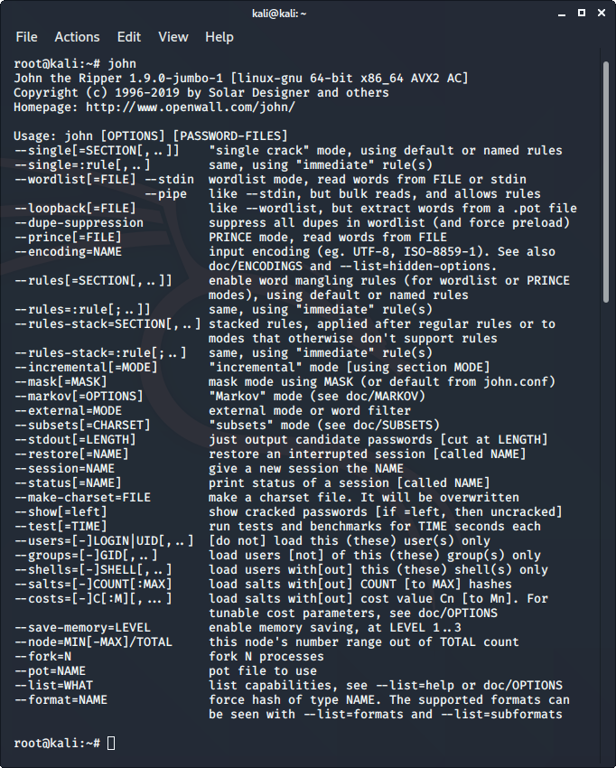

John the Ripper est un excellent outil pour déchiffrer les mots de passe en utilisant une brute célèbre pour des attaques telles que l’attaque par dictionnaire ou l’attaque par liste de mots personnalisée, etc. Il est même utilisé pour déchiffrer les hachages ou les mots de passe des fichiers compressés ou compressés et même des fichiers verrouillés. Il dispose de nombreuses options disponibles pour casser des hachages ou des mots de passe.
